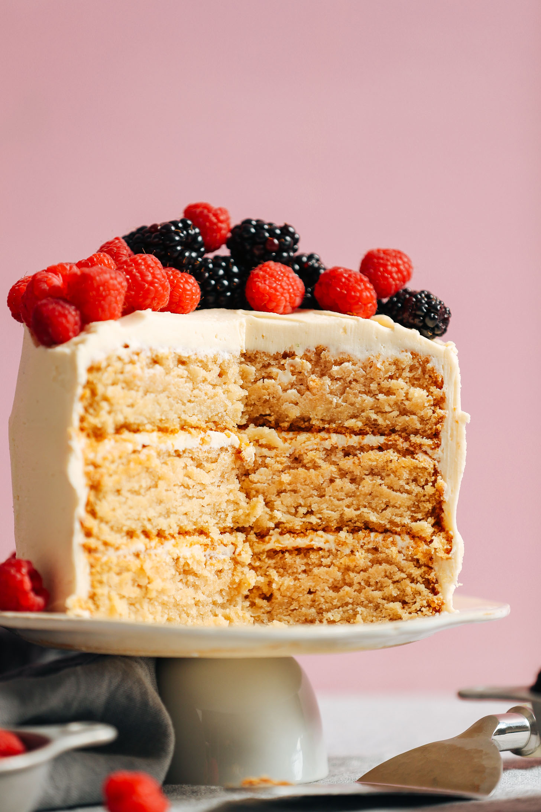

Why gluten-free?
Gluten-free baking is imporatnt for many reasons.
If you're a good gluten free baker, it should be impossible to tell your food is even gluten free!
Things to consider when baking gluten-free
Gluten free bakes fall down on:
- Structure. Without gluten to hold it together, many bakes are more crumbly and brittle.
- Moistness. A lot of gluten free bakes can come out dry, as gluten free flours lose more moisture when baking.
My top 3 Gluten free recipes
These fun and tasty recipes will surely be enjoyed by the whole family!